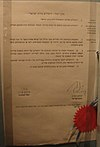

annexation

Definition: Annexation, in international law, is the forcible acquisition of one state's territory by another state, usually following military occupation of the territory. It is generally held to be an illegal act. Annexation is a unilateral act where territory is seized and held by one state, is distinct from conquest and differs from cession, in which territory is given or sold through treaty.
Source: Wikipedia
Wikipedia Page
Wikidata Page